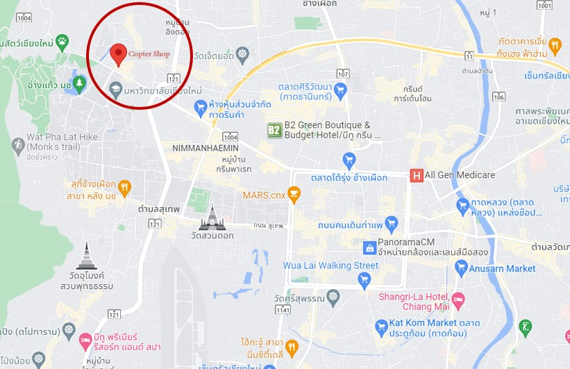

ข้อมูลติดต่อ
ตัวร้านตั้งอยู่หน้ามหาวิทยาลัยเชียงใหม่ เป็นหนึ่งในร้านตามสั่งที่ราคาเป็นมิตรต่อนักศึกษา ตัวร้านเองตั้งอยู่ในตัวเมืองเชียงใหม่ มีลักษณะเป็นร้านอาหารตามสั่งที่มีเมนูหลากหลาย โดยมีจุดเด่นเป็นการใช้แชทบอทที่สามารถตอบคำถามและสั่งอาหารแทนการใช้พนักงาน ที่สำคัญคือ บอทนี้ใช้ลักษณะการเทรนโมเดลที่สร้างขึ้นโดย "บริษัทบอทน้อย" โดยที่สำคัญคือ
- สามารถสั่งอาหาร ผ่านทางแชทเพจ
- จองโต๊ะอาหารและดูสถานะของโต๊ะที่ร้านได้ผ่านแชทเพจ โดยสามารถเข้าไปดูโดยตรงได้ที่เว็บ Copter Shop
- สามารถสั่งอาหารแบบเดริเวอรี่ โดยจุดเด่นสำคัญคือเป็นพนักงานของร้านมาส่งเอง
- ที่สำคัญคือ สามารถจ่ายเงินผ่านบัญชีธนาธารและส่งสลิปเพื่อยืนยันการจ่ายเงินได้
เบอร์โทร: 098-765-4321
Email: CopterKung@gmail.com
หรือสั่งอาหารได้ผ่านทางเพจ Copter bot
